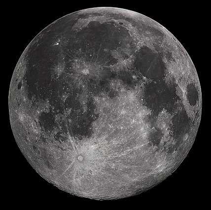
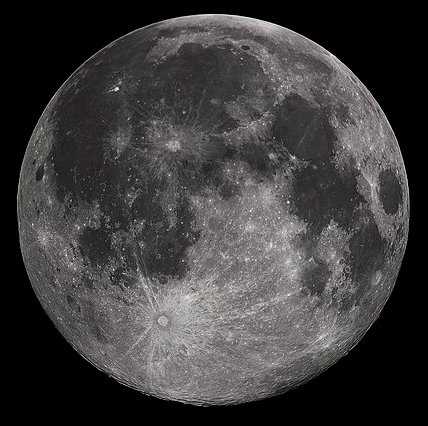

Introduction to The Moon on Wikipedia
 

The Moon is Earth's only natural satellite. At about one-quarter the diameter of Earth (comparable to the width of Australia), it is the largest natural satellite in the Solar System relative to the size of a major planet, the fifth largest satellite in the Solar System overall, and larger than any known dwarf planet. The Moon is a planetary-mass object that formed a differentiated rocky body, making it a satellite planet under the geophysical definitions of the term. It lacks any significant atmosphere, hydrosphere, or magnetic field. Its surface gravity is about one-sixth of Earth's (0.1654 g); Jupiter's moon Io is the only satellite in the Solar System known to have a higher surface gravity and density.
The Moon's orbit around Earth has a sidereal period of 27.3 days. During each synodic period of 29.5 days, the amount of visible surface illuminated by the Sun varies from none up to 100%, resulting in lunar phases that form the basis for the months of a lunar calendar. The Moon is tidally locked to Earth, which means that the length of a full rotation of the Moon on its own axis causes its same side (the near side) to always face Earth, and the somewhat longer lunar day is the same as the synodic period. That said, 59% of the total lunar surface can be seen from Earth through shifts in perspective due to libration.
Both the Moon's prominence in the earthly sky and its regular cycle of phases have provided cultural references and influences for human societies throughout history. Such influences can be found in language, calendar systems, art, and mythology. The first artificial object to reach the Moon was the Soviet Union's Luna 2 uncrewed spacecraft in 1959; this was followed by the first successful soft landing by Luna 9 in 1966. The only human lunar missions to date have been those of the United States' Apollo program, which landed twelve men on the surface between 1969 and 1972. These and later uncrewed missions returned lunar rocks that have been used to develop a detailed geological understanding of the Moon's origins, internal structure, and subsequent history.
- The Moon is Earth’s only natural satellite and the fifth largest moon in the solar system.
- The Moon’s presence helps stabilize our planet’s wobble and moderate our climate.
- The Moon’s distance from Earth is about 240,000 miles (385,000km).
- The Moon has a very thin atmosphere called an exosphere.
Facts About The Moon